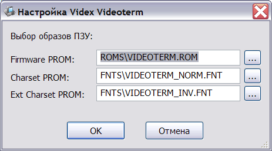

Модуль эмуляции Videx Videoterm реализует поддержку в Apple расширенного текстового режима 80x24.
Для конфигурирования модуля используется окно настроек:

В этом окне можно указать файл с прошивкой ПЗУ, а также файлы знакогенератора нижней и верхней части кодовой таблицы.
В комлект эмулятора входят следующие файлы шрифтов:
Эти файлы размещаются в подкаталоге fnts и могут быть использованы для настройки модуля.
Поскольку ПЗУ платы содержит жёсткую привязку к адресам ячейки, она должна всегда устанавливаться в 3-й разъём.
В эмуляторе плата Videx Videoterm активизируется автоматически (например, в CP/M), либо командой Бейсика PR#3.
См. также: Изменение конфигурации, Описание и настройка устройств, Поддерживаемое оборудование, Главное меню